# 2017-2021 data
#reading in the Shimadzu search output is slow, skip it
# source("read_shimadzu.R")
# setwd("../Maxfield/data")
# datafiles <- list.files(pattern="Lupinus"); datafiles %>% set_names() %>% map(read.shimadzu) %>% bind_rows(.id="batch")
# lup.data <- read.shimadzu("Lupinus_2017thru2021.txt")
# setwd(path)
# save(lup.data, file="data/lupinus_gc_2017thru2021.rda")
load("data/lupinus_gc_2017thru2021.rda")
lup.data1721 <- lup.data; remove(lup.data)
# 2023 and 2025 (sampled 2024) data
# source("read_shimadzu.R")
# setwd("./data/2023_2025/")
# datafiles <- list.files(pattern=".txt")
# lup.data2325 <- datafiles %>% set_names() %>% map(read.shimadzu) %>% bind_rows()
# setwd("../..")
#save(lup.data2325, file="data/lupinus_gc_2023_2025.rda")
load("data/lupinus_gc_2023_2025.rda")
lup.data <- bind_rows(lup.data1721, lup.data2325)
# load short names and standard regressions
lupchems <- read_tsv("data/lupmeta2017thru2025 - lupchem.tsv") %>%
select(name, shortname, standard) %>%
mutate(class = fct_recode(standard, Aliphatic="Hexenol", Benzenoid="Methyl_salicylate", Benzenoid="Indole",
Sesquiterpene="Caryophyllene", Monoterpene="alpha_Pinene", Monoterpene="Linalool")) %>%
left_join(read_csv("data/regressions_181921_filtered_slopes.csv") %>% filter(year=="2019"))
class_pal <- set_names(c("#BC0060","#027B8C","#E56E00","#86D400"), levels(lupchems$class))
#shorten chemical names and merge compounds with multiple names
shortnames <- lupchems %>% select(name, shortname) %>% filter(shortname!="") %>% deframe()
#shortnames[shortnames %in% shortnames[duplicated(shortnames)]]
lup.data$Name <- recode(lup.data$Name, !!!shortnames)
lup.all <- lup.data %>%
#filter(str_detect(Filename, "Lupinus|Blank")) %>%
dcast(Filename~Name, sum, value.var="Area")
rownames(lup.all) <- lup.all[,1]
lup.all[,1] <- NULL
lup.cut <- lup.all[,colSums(lup.all)>1e8]#arbitrary cutoff 5e7k <- 7
set.seed(1)
km <- kmeans(decostand(lup.cut, method="log"), k, nstart=3)
lup.km <- tibble(FileName=rownames(lup.all)) %>%
mutate(rowSum = rowSums(lup.all),
Type = str_detect(FileName, "Blank") %>% if_else("blank","sample") %>% factor,
#str_extract(FileName, "Blank|Lupinus") %>% fct_recode(blank="Blank",sample="Lupinus")
nameBlank = Type=="blank",
runYear = str_extract(FileName, "20[0-9][0-9]") %>%factor,#replace_na("2018") %>%
Cluster = km$cluster) %>% # Figure out which k-means clusters are the blanks
mutate(kBlank = Cluster %in% (count(., nameBlank, Cluster) %>% filter(nameBlank, n>2) %>% pull(Cluster)),
Mixup = nameBlank != kBlank)
lup.km %>% count(kBlank, nameBlank) %>% kable(caption = "k-means attempt to separate blanks")| kBlank | nameBlank | n |
|---|---|---|
| FALSE | FALSE | 213 |
| FALSE | TRUE | 1 |
| TRUE | FALSE | 138 |
| TRUE | TRUE | 9 |
#Blanks are in two clusters near other samples, so kmeans not working very well to distinguish them (unless high n)Samples dropped (blanks, leaks, nonfloral, or other users):
# Moved this section from markes_sequence.R, code above that section outputs this Rdata:
#load("data/markes_sequence.rda")#../Inventory/ #old format for skips
#now gcYEAR.csv files from the RMBL-GCMS project have the unannotated skip info
sequ.summary <- list.files("./data/markes_sequence/", pattern=".csv", full.names=T) %>% read_csv()
lupinus <- sequ.summary$FileName %in% lup.km$FileName # #str_detect(sequ.summary$FullName, "Lupinus|lupinus|Lupine")
lupinus.batchids <- sequ.summary %>% filter(lupinus) %>% select(id) %>% unique() %>% na.omit()
lupgc <- sequ.summary %>%
filter(id %in% lupinus.batchids$id | lupinus) %>% #get entire batch if it had a sample that matches
left_join(lup.km %>% select(FileName, rowSum, nameBlank, Mixup, kBlank, Cluster), by="FileName") %>%
write_csv("output/lupinus_all_2017thru2025.csv")
pops <- read_tsv("data/lupmeta2017thru2025 - pops.tsv") %>% mutate(population=factor(population, levels=unique(population)))
popnames <- pops %>% select(pop,population) %>% deframe()
# Get metadata from filenames in "RMBL GCMS Data Inventory"
lupmeta <- list.files("./data/markes_sequence/annotated", patter=".csv", full.names=T) %>% map_dfr(~read_csv(.x, na="NA")) %>%
#read_tsv("data/RMBL GC-MS Data Inventory - maxfield_all210827annot.tsv", na="NA") %>%
filter(user=="J Heiling : Lupinus") %>% #TODO not going to work since user is based on filename, not sample
distinct(FileName, .keep_all = TRUE) %>%
mutate(sample = na_if(sample,"") %>% coalesce(FileName) %>% str_remove(".qgd")) %>%
select(index, FileName, batch, sample) %>%
mutate(type = ifelse(str_detect(sample,"air"), "ambient", "floral"),
sample_grid = str_remove(sample, "air_"), scented=NA_character_) %>%
separate(sample_grid, into=c("species","pop","sample_year","plant","rundate","GCn"), remove=F) %>%
full_join(lupgc %>% distinct(FileName, .keep_all = T) %>% select(-sample), by="FileName") %>% #was creating sample.x, sample.y so drop that column
# lupmeta %>% select(index, FileName, sample, rowSum, Cluster, type, pop, sample_year, plant, rundate, GCn) %>%
# drop_na(Cluster) %>%
# separate(FileName, into=paste0("fn",1:8), remove=F, fill="right") %>%
# write_csv("output/lupmeta.csv", na="") #fill in metadata for old samples (2017-2019)
rows_update(read_tsv("data/lupmeta2017thru2025 - lupmeta.tsv", col_types="cccccccccccccccccccc") %>%
#filter(is.na(index)) %>% #just dropped this-restricts to 2017-2019
select(FileName, type, pop, sample_year, plant, scented, rundate), by="FileName") %>%
mutate(index = coalesce(index, 10000 + 1:nrow(.)),
sample = coalesce(sample, FileName) %>% str_remove(".qgd")) %>% #these filled samples were excluded above with na_if(sample,"")
drop_na(nameBlank) %>% #drops rows in same batchids but not integrated (other people's samples)
filter(!nameBlank) %>% #!kBlank
filter(type %in% c("ambient","floral")) %>% #exclude leaf controls and insects
left_join(pops) %>% mutate(pop = factor(pop, levels=pops$pop))
(dropped_samples <- sort(setdiff(levels(lup.data$Filename), lupmeta$FileName))) [1] "beetles_lerb_08292019am.qgd"
[2] "BellNBeetleAug16_08202018.qgd"
[3] "BellNBeetleAug18_08212018.qgd"
[4] "BellNFlr45Aug18_08202018.qgd"
[5] "BellNLeaf38Aug16_08202018.qgd"
[6] "BellNLeaf40Aug16_08202018.qgd"
[7] "Blank_08202018.qgd"
[8] "Blank_08212018.qgd"
[9] "Blank_08282019.qgd"
[10] "Blank_08292019am.qgd"
[11] "Blank_08292019pm.qgd"
[12] "Blank_08302019am.qgd"
[13] "blank1_7102025_01.qgd"
[14] "blank1_7112025_01.qgd"
[15] "blank1_7122025_01.qgd"
[16] "blank1_792025_01.qgd"
[17] "blank1_792025_02.qgd"
[18] "Blank1_8112021_01.qgd"
[19] "Blank1_8122021_01.qgd"
[20] "Blank1_8312023_21.qgd"
[21] "Blank11_772025_10.qgd"
[22] "BVB4_08282019.qgd"
[23] "DC_trapblank_145-25_792025_02.qgd"
[24] "DC_trapblank_195_25_792025_26.qgd"
[25] "DC_trapblank_196_25_792025_27.qgd"
[26] "DC_trapblank_234-25_792025_03.qgd"
[27] "JH_Lup_arg_BVB_24-8tube2_772025_09.qgd"
[28] "JH_Lup_arg_CIN23_23-14_792025_23.qgd"
[29] "JH_Lup_arg_CIN23_23-6_792025_25.qgd"
[30] "JH_Lup_arg_CIN23_24-18_792025_24.qgd"
[31] "JH_Lup_arg_CIN23_24-Pinflag_7102025_07.qgd"
[32] "JH_Lup_arg_ELK_23-4_912023_10.qgd"
[33] "JH_Lup_arg_ELK_23Air1_912023_07.qgd"
[34] "JH_Lup_arg_ELK_23Air1redo_922023_07.qgd"
[35] "JH_Lup_arg_ELK_23Air2_912023_06.qgd"
[36] "JH_Lup_arg_ELK_ARNICA1_912023_08.qgd"
[37] "JH_Lup_arg_LERB_24-18_7112025_17.qgd"
[38] "Lupinus_eml_20_1_8132021_03.qgd"
[39] "Lupinus_eml_20_air_1_8132021_01.qgd"
[40] "Lupinus_npb_20_1_8122021_03.qgd"
[41] "Nayeli_100_922023_21.qgd"
[42] "Nayeli_102_912023_23.qgd"
[43] "Nayeli_103_922023_23.qgd"
[44] "Nayeli_111_922023_09.qgd"
[45] "Nayeli_117_922023_16.qgd"
[46] "Nayeli_15_912023_25.qgd"
[47] "Nayeli_15redo_922023_25.qgd"
[48] "Nayeli_17_912023_13.qgd"
[49] "Nayeli_19_912023_18.qgd"
[50] "Nayeli_2_912023_12.qgd"
[51] "Nayeli_22_922023_17.qgd"
[52] "Nayeli_23_922023_26.qgd"
[53] "Nayeli_28_922023_11.qgd"
[54] "Nayeli_33_922023_04.qgd"
[55] "Nayeli_35_912023_19.qgd"
[56] "Nayeli_38_922023_01.qgd"
[57] "Nayeli_39_912023_22.qgd"
[58] "Nayeli_39redo_922023_22.qgd"
[59] "Nayeli_42_912023_16.qgd"
[60] "Nayeli_43_922023_19.qgd"
[61] "Nayeli_49_922023_24.qgd"
[62] "Nayeli_5_912023_09.qgd"
[63] "Nayeli_52_922023_15.qgd"
[64] "Nayeli_59_912023_20.qgd"
[65] "Nayeli_6_922023_14.qgd"
[66] "Nayeli_65_922023_28.qgd"
[67] "Nayeli_66_912023_21.qgd"
[68] "Nayeli_68_922023_12.qgd"
[69] "Nayeli_70_922023_18.qgd"
[70] "Nayeli_74_922023_03.qgd"
[71] "Nayeli_82_922023_08.qgd"
[72] "Nayeli_85_912023_15.qgd"
[73] "Nayeli_86_922023_13.qgd"
[74] "Nayeli_88_922023_06.qgd"
[75] "Nayeli_91_922023_27.qgd"
[76] "Nayeli_92_912023_24.qgd"
[77] "Nayeli_94_912023_17.qgd"
[78] "Nayeli_96_922023_20.qgd"
[79] "Nayeli_98_912023_11.qgd"
[80] "Nayeli_99_912023_10.qgd"
[81] "Nayeli_99redo_922023_10.qgd"
[82] "Nayeli_Amb1_912023_14.qgd"
[83] "Nayeli_blank_922023_02.qgd"
[84] "thrips_elk_08292019am.qgd" with(lupmeta, table(population, sample_year))#sample_years are rough - split from filename sample_year
population 17 18 19 20 23 24
Brush Creek Trailhead 0 0 0 9 0 0
East River Bridge 0 0 19 10 14 26
Gothic Parking Lot 5 0 0 0 0 0
Burro Park 0 0 0 9 0 0
Emerald Lake 0 0 0 10 0 0
Marmot Mesa 0 0 12 0 0 0
Bellview Bench 0 18 4 10 0 24
Mexican Cut Turnoff 0 0 7 0 0 0
Elko Park 0 0 9 0 10 0
401 0 0 9 0 0 0
North Pole Basin 4 0 0 7 0 0
Currant Hill 0 0 0 5 0 0
Bellview Corner 0 0 5 0 0 0
Bellview Wilderness Boundary 0 0 10 0 0 0
Yule Pass Trailhead 0 0 5 0 0 0
Cinnamon 0 0 8 0 11 17lupmeta %>% filter(type=="floral") %>% count(population, sample_year, scented) %>% pivot_wider(names_from=scented,values_from=n) %>%
kable(caption = "Inventory of scented (1) or unscented (0) samples")| population | sample_year | 0 | 1 | NA |
|---|---|---|---|---|
| Brush Creek Trailhead | 20 | 7 | 1 | NA |
| East River Bridge | 19 | 15 | NA | NA |
| East River Bridge | 20 | 9 | NA | NA |
| East River Bridge | 23 | 11 | 1 | NA |
| East River Bridge | 24 | NA | NA | 21 |
| Gothic Parking Lot | 17 | 5 | NA | NA |
| Burro Park | 20 | 4 | 4 | NA |
| Emerald Lake | 20 | 3 | 5 | NA |
| Marmot Mesa | 19 | 10 | NA | NA |
| Bellview Bench | 18 | 9 | 7 | NA |
| Bellview Bench | 19 | 1 | 2 | NA |
| Bellview Bench | 20 | 4 | 5 | NA |
| Bellview Bench | 24 | NA | NA | 19 |
| Mexican Cut Turnoff | 19 | 3 | 3 | NA |
| Elko Park | 19 | NA | 8 | NA |
| Elko Park | 23 | 1 | 7 | 1 |
| 401 | 19 | 4 | 3 | NA |
| North Pole Basin | 17 | NA | 4 | NA |
| North Pole Basin | 20 | NA | 6 | NA |
| Currant Hill | 20 | 2 | 2 | NA |
| Bellview Corner | 19 | 1 | 3 | NA |
| Bellview Wilderness Boundary | 19 | 2 | 7 | NA |
| Yule Pass Trailhead | 19 | NA | 4 | NA |
| Cinnamon | 19 | NA | 7 | NA |
| Cinnamon | 23 | NA | 9 | NA |
| Cinnamon | 24 | NA | NA | 15 |
lup <- lup.all[lupmeta$FileName,]
rownames(lup) <- rownames(lupmeta) <- lupmeta$index
save(lup, lupmeta, file="output/lupinus_volatiles_2017thru2025.rda")lup.nmds <- metaMDS(sqrt(lup.cut), dist="bray", autotransform = FALSE, trace=F)
lup.nmds.points <- fortify(lup.nmds) %>% as_tibble() %>%
filter(score=="sites") %>% left_join(lup.km, by=c("label"="FileName"))
nmds.plot <- ggplot(lup.nmds.points, aes(x=NMDS1, y=NMDS2, shape=Type)) + theme_classic()
nmds.plot + geom_point(aes(color=log(rowSum)), size=2) + scale_color_viridis_c()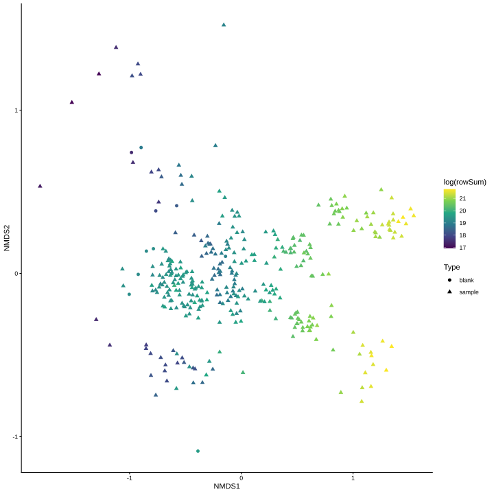
nmds.plot + geom_point(aes(color=runYear), size=2)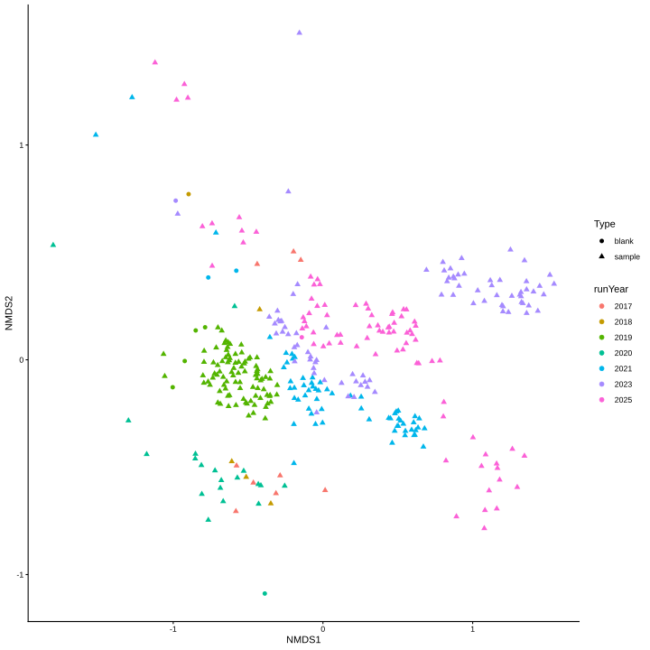
nmds.plot + geom_point(aes(color=factor(Cluster)), size=2)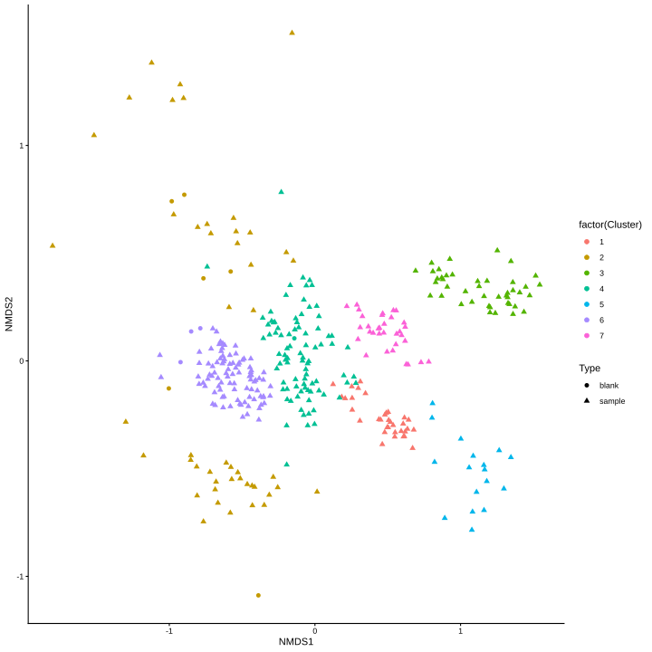
nmds.plot + geom_point(aes(color=nameBlank), size=2)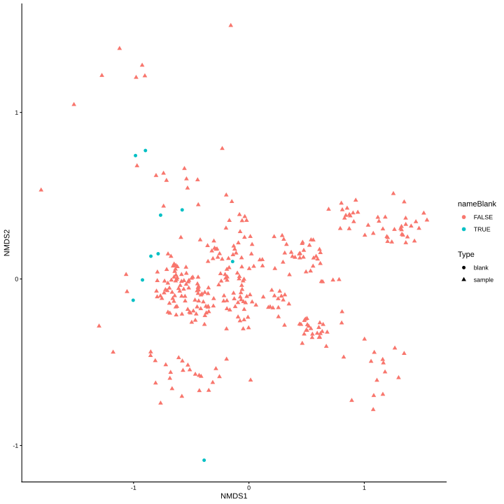
lup.cap <- capscale(lup.cut ~ nameBlank, distance="bray", metaMDSdist = F, data=lup.km)
anova(lup.cap)Permutation test for capscale under reduced model
Permutation: free
Number of permutations: 999
Model: capscale(formula = lup.cut ~ nameBlank, data = lup.km, distance = "bray", metaMDSdist = F)
Df SumOfSqs F Pr(>F)
Model 1 0.773 2.3049 0.004 **
Residual 359 120.430
---
Signif. codes: 0 '***' 0.001 '**' 0.01 '*' 0.05 '.' 0.1 ' ' 1lup.cap.points <- fortify(lup.cap) %>% as_tibble() %>%
filter(score=="sites") %>% left_join(lup.km, by=c("label"="FileName"))
ggplot(lup.cap.points, aes(x=CAP1, y=MDS1, alpha=nameBlank)) + geom_point() +
scale_alpha_manual(values=c(0.2,1))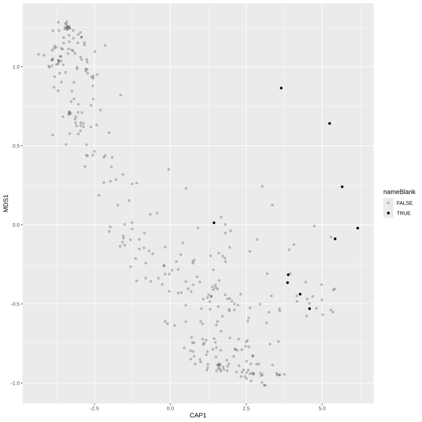
cap.chems <- fortify(lup.cap) %>% as_tibble() %>% filter(score=="species") %>% arrange(desc(CAP1))with(lupmeta, table(type, sample_year)) sample_year
type 17 18 19 20 23 24
ambient 0 2 15 8 5 12
floral 9 16 73 52 30 55lup.nmds.noblanks <- metaMDS(lup[,colSums(lup)>1e8], distance="bray", autotransform=F, trace=F)
lup.nmds.points <- as_tibble(fortify(lup.nmds.noblanks))
lup.nmds.points %>% filter(score=="sites")%>% bind_cols(lupmeta) %>%
ggplot(aes(x=NMDS1, y=NMDS2)) +
geom_label(aes(label=sample, color=type)) +
geom_text(data= lup.nmds.points %>% filter(score=="species"), aes(label=label))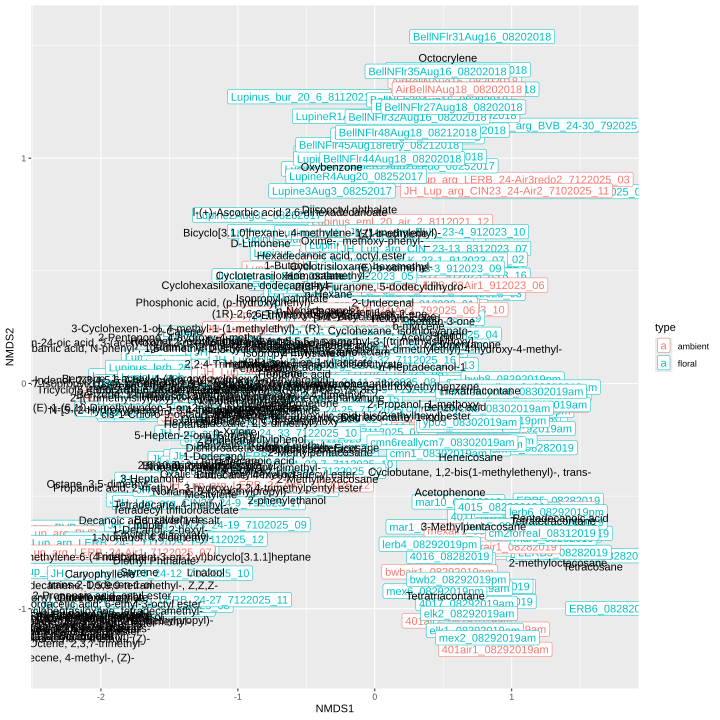
lup.cap.noblanks <- capscale(lup[,colSums(lup)>1e8] ~ type, distance="bray", metaMDSdist = F, data=lupmeta)
anova(lup.cap.noblanks, by="term")Permutation test for capscale under reduced model
Terms added sequentially (first to last)
Permutation: free
Number of permutations: 999
Model: capscale(formula = lup[, colSums(lup) > 1e+08] ~ type, data = lupmeta, distance = "bray", metaMDSdist = F)
Df SumOfSqs F Pr(>F)
type 1 0.477 1.5226 0.112
Residual 275 86.232 lup.cap.points <- as_tibble(fortify(lup.cap.noblanks))
lup.cap.points %>% filter(score=="sites")%>% bind_cols(lupmeta) %>%
ggplot(aes(x=CAP1, y=MDS1)) +
geom_label(aes(label=sample, color=paste(type, sample_year))) +
geom_text(data= lup.cap.points %>% filter(score=="species"), aes(label=label))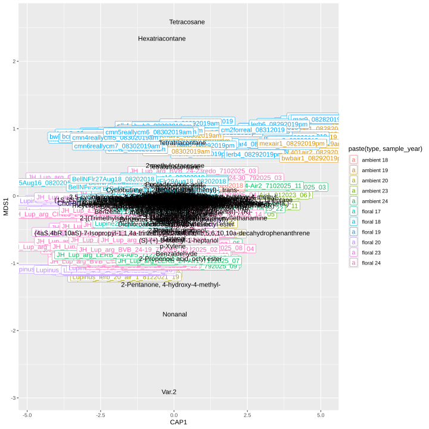
lup.data.cut <- lup.data[lup.data$Filename %in% lupmeta$FileName,]
#lup.data.cut$Filename <- lupmeta$sample[match(lup.data.cut$Filename, lupmeta$FileName)] #don't use sample!
lup.data.cut <- lup.data.cut[lup.data.cut$Name != "", ]#drop peaks that were not identified
lup.data.cut$Name <- droplevels(lup.data.cut$Name)
longdata <- load_longdata(lup.data.cut, sample="Filename", RT="Ret.Time", name="Name", area="Area", match = "SI", maxmatch=100)
metadata <- load_metadata(lupmeta %>% rename(realsample=sample),
sample="FileName", type="type")#was sample="sample"
metadata$type <- factor(metadata$type)
vol.all <- make_sampletable(longdata, metadata)
chems <- make_chemtable(longdata, metadata)
### Flower filtering
chemsf <- chems %>%
filter_RT(2, 17) %>%
filter_match(0.8) %>%
filter_freq(0.1, group = FALSE) %>%
filter_contaminant(cont.list = c("Acetic acid, trichloro-, nonyl ester",
"2-Pentanol, 3-chloro-4-methyl-, (R*,R*)-(.+/-.)-",
"Hexyl chloroformate", "Oxirane, decyl-", #below: alkanes with many RTs
"4-methylpentanoic acid", "hexadecane", "1-nonoxytetradecane",
"13-methyltetradecanal", "nonylcyclohexane", "3,8-dimethyldecane",
"farnesane", "2,5-dimethylnonane", "3,3,5-trimethylheptane",
"3,3,5-trimethylcyclohexan-1-ol")) %>% #quant and quant never both nonzero
filter_area(min_maximum = 1e6) %>%
filter_ambient_ratio(vol.all, metadata, ratio = 4) %>%
filter_ambient_ttest(vol.all, metadata, alpha = 0.05, adjust = "fdr") %>%
combine_filters()
chemsf$filter_final <- with(chemsf, (filter_RT == "OK" & filter_match=="OK" & filter_freq.floral == "OK" &
filter_contaminant == "OK" & filter_area == "OK" &
filter_ambient_ratio == "OK") | name=="indole")
#Prune based on bouquet filters
vol <- prune_sampletable(vol.all, chemsf, metadata)
exclude_low <- c("JH_Lup_arg_BVB_24-23redo_7102025_03.qgd", "JH_Lup_arg_BVB_24-30_792025_03.qgd") #<1 ng/hr volatiles
meta <- metadata[metadata$type == "floral",][!rownames(vol) %in% exclude_low,]
vol <- vol[!rownames(vol) %in% exclude_low,]
chm <- chemsf[match(colnames(vol), chemsf$name),]
#Convert peak areas to nanograms
lupchems2 <- lupchems[match(colnames(vol), lupchems$shortname),]
vol <- sweep(vol, 2, lupchems2$area_per_ng, FUN = '/')
vol <- vol / (40/60 + 20/60) # divide by equilibration + pumping time in hours (40+20 min)
meta$Total <- rowSums(vol)
#bouquet diagnostics
plot_filters(chemsf, option="prop")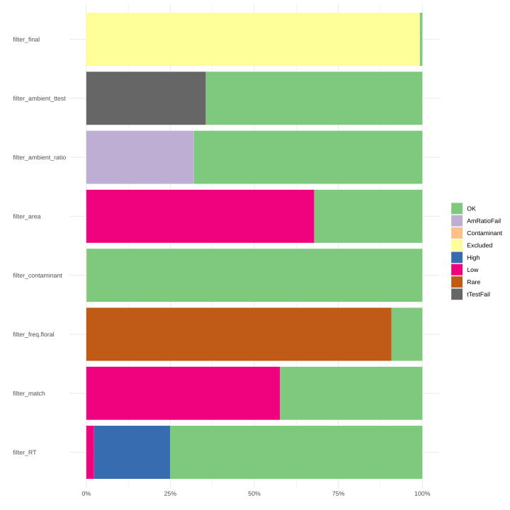
plot_filters(chemsf, option="rarity")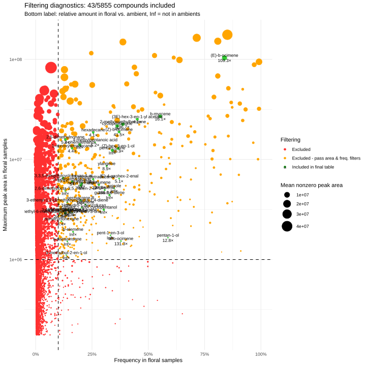
plot_filters(chemsf, option="ambient")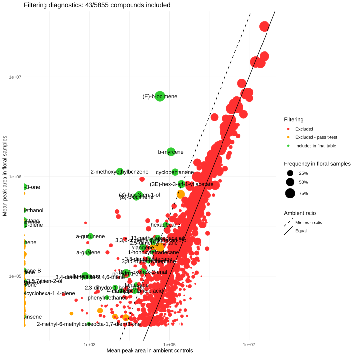
plot_filters(chemsf, option="volcano")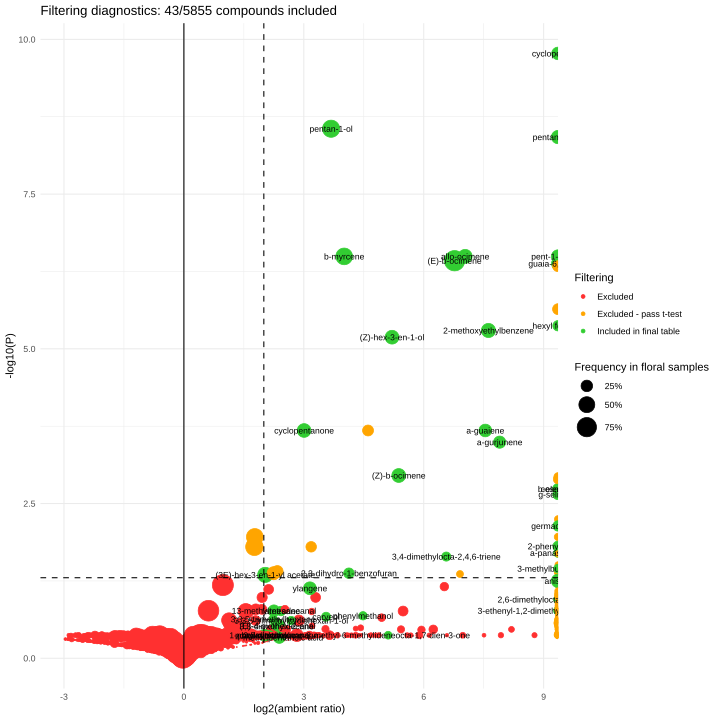
tointegrate <- colnames(vol)
best <- list()
i <- 1
vol.left <- vol[,tointegrate]^(1/4) # halfway between areas and presence-absence
while(ncol(vol.left)>0) {
print(dim(vol.left))
best[[i]] <- which.max(rowSums(vol.left))
vol.left <- vol.left[ , !decostand(vol.left[best[[i]],], method="pa"), drop=FALSE]
i <- i+1
}
(best.vol <- as.data.frame(t(vol[unlist(best),tointegrate])))#Load quantitative integrations
source("read_shimadzu.R")
quant.full <- read.shimadzu.quant("./data/lupinus_2017_2025_quant35.txt") %>%
mutate(Name = trimws(Name), Area=replace_na(Area, 0)) %>%
distinct(Filename, Name, .keep_all=T)
quant.full %>% drop_na(Ret.Time) %>% mutate(Name = fct_reorder(Name, Ret.Time)) %>%
ggplot(aes(x=Ret.Time, y=Name)) + geom_jitter(width=0, size=0.2)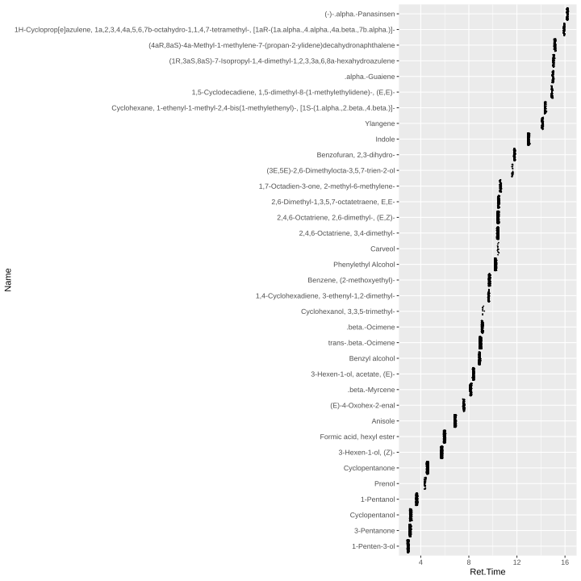
quant.full %>% drop_na(Ret.Time) %>% group_by(Name) %>% mutate(RT.median = median(Ret.Time)) %>%
ggplot(aes(x=Ret.Time-RT.median, y=Name, size=Area)) + geom_jitter(width=0)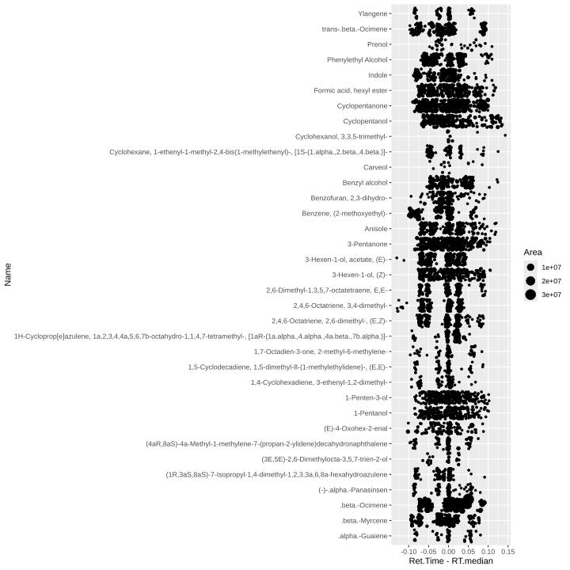
quant <- quant.full %>% select(Dirname, Filename, Name, Area) %>%
mutate(Dirname = fct_relabel(Dirname, str_remove, "C:/GCMSsolution/Data/")) %>%
mutate(Name = recode(Name, !!!shortnames)) %>%
filter(Name != "3,3,5-trimethylcyclohexan-1-ol") %>% #no overlap between nonzero vol and quant
pivot_wider(names_from = "Name", values_from="Area") %>% as.data.frame()
rownames(quant) <- quant$Filename
quant[,c("Dirname","Filename")] <- NULL
quant.all <- quant[rownames(vol),]
write_tsv(quant.all %>% rownames_to_column("Filename"), "output/lupinus_quant_all.tsv")
#compare areas of quant ions and qual peaks to find conversion factor
quant.slopes <- set_names(rep(0,ncol(quant.all)), colnames(quant.all))
for(compvol in colnames(quant.all)) {
nozeros <- bind_cols(select(vol,qual=compvol), select(quant.all,quant=compvol)) %>%
filter(!(qual==0 | quant == 0))
quant.slopes[compvol] = coef(lm(quant ~ 0 + qual, data=nozeros))["qual"]
}
write_tsv(enframe(quant.slopes) %>% left_join(enframe(shortnames, name="Name", value="name")),
"output/quant_slopes.tsv")
quant.scaled <- sweep(quant.all, 2, quant.slopes, FUN = '/')
quant.scaled.vol <- quant.scaled[meta$sample, ]#sample is formerly FileName but renamed by bouquet
tibble(quant=unlist(vol[,colnames(quant.scaled.vol)]), qual=unlist(quant.scaled.vol)) %>%
ggplot(aes(x=qual, y=quant)) + geom_point(alpha=0.5) + geom_abline(color="red")+
scale_x_sqrt("Qualitative (ng/hr)") + scale_y_sqrt("Quantitative (ng/hr)")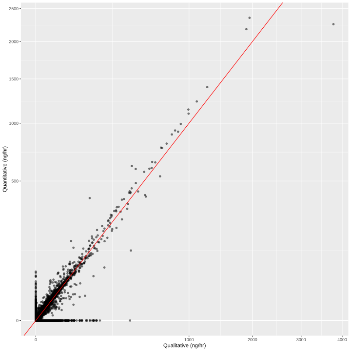
#swap in scaled quant integrations
#make sure not to run above code after this line has run, or start vol over with pruning
vol[,colnames(quant.scaled.vol)] <- quant.scaled.vol
save(vol, meta, chm, file="output/lupinus_filtered_2017thru2025.rda")
write_csv(vol, "output/lupinus_vol.csv")
write_csv(meta, "output/lupinus_meta.csv")
write_csv(chm, "output/lupinus_chm.csv")longdata.RT <- longdata %>% filter(name %in% chemsf$name[chemsf$filter_final]) %>%
left_join(select(metadata, sample, sample_year)) %>%
group_by(name) %>% mutate(n=n(), RT.sd=sd(RT)) %>% ungroup() %>%
mutate(name=fct_reorder(name, RT))
RT.year <- longdata.RT %>% group_by(name, sample_year) %>% summarize(RT=median(RT)) %>% pivot_wider(names_from=sample_year, values_from=RT)
RT.year %>% filter(name %in% setdiff(colnames(vol), colnames(quant.all))) %>% arrange(`17`)# A tibble: 0 × 7
# Groups: name [0]
# ℹ 7 variables: name <fct>, 17 <dbl>, 18 <dbl>, 19 <dbl>, 20 <dbl>, 23 <dbl>,
# 24 <dbl>RT.tol <- 0.1 # set in quantitative params
ggplot(longdata.RT, aes(x=RT, y=name,color=RT.sd)) + geom_point(position=position_jitter(width=0, height=0.5)) +
scale_color_viridis_c(option="magma") + theme_dark()+
geom_text(aes(x=4.5, label=n), color="grey80") +
stat_summary(fun="median", fun.max=~median(.x)+RT.tol, fun.min=~median(.x)-RT.tol, geom="pointrange", color="white", size=0.5, shape=15)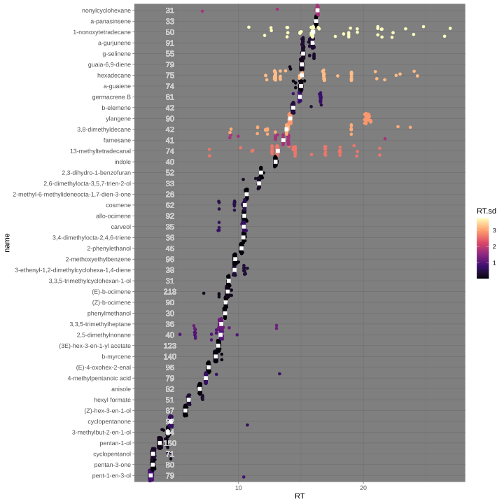
ggplot(longdata.RT, aes(y=RT, x=factor(sample_year), color=RT.sd)) +
facet_wrap(vars(name), scales="free_y") + geom_boxplot() + scale_color_viridis_c(option="magma") + theme_dark() 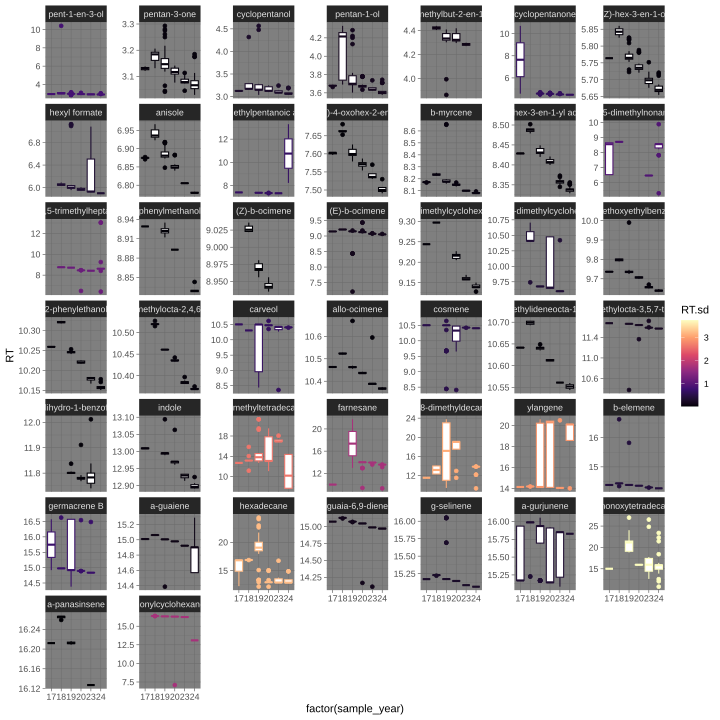
mess <- c("allo-ocimene", "carveol", "cosmene", "3,4-dimethylocta-2,4,6-triene")
longdata.RT.mess <- longdata.RT %>% filter(name %in% mess) %>%
arrange(RT) %>% mutate(cluster = kmeans(RT, 3, nstart=4)$cluster) %>%
group_by(cluster) %>% mutate(RT.cluster = round(mean(RT),2)) %>% ungroup()
#shows 4 peaks that come up & their retention times. Color shows you what compound it gets identified as
ggplot(longdata.RT.mess, aes(x=factor(RT.cluster), fill=name)) + geom_bar()
#are there differences in retention times? answer: no
ggplot(longdata.RT.mess, aes(x=RT, color=name, fill=name)) + facet_wrap(vars(RT.cluster), scales="free_x") + theme_minimal() +
geom_density(alpha=0.2, linewidth=2) + geom_jitter(aes(y=-as.integer(factor(name))*10), width=0.0002, height=4)
mess.wide <- longdata.RT.mess %>% select(sample, RT.cluster, area) %>% pivot_wider(names_from = RT.cluster, values_from=area, values_fn=sum, values_fill=0)pheatmap(t(vol^(1/5)), color = mako(512),
annotation_col = select(meta, sample_year, population, sample) %>%
column_to_rownames("sample") %>% mutate(sample_year=factor(sample_year)),
annotation_row = select(lupchems, class, shortname) %>% distinct(shortname, .keep_all=TRUE) %>% column_to_rownames("shortname"))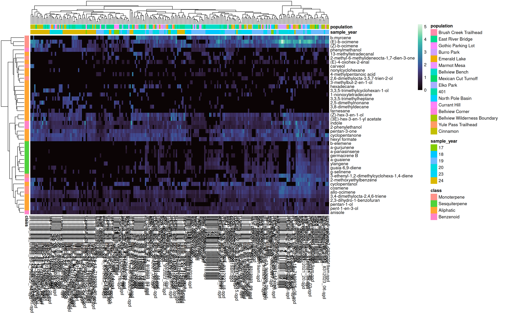
lup.nmds <- metaMDS(sqrt(vol), dist="bray", autotransform = FALSE, trace=F)
lup.nmds.points <- fortify(lup.nmds) %>% as_tibble()
lup.nmds.samples <- lup.nmds.points %>% filter(score=="sites") %>% bind_cols(meta)
lup.nmds.chems <- lup.nmds.points %>% filter(score=="species")
nmds.plot <- ggplot(lup.nmds.samples, aes(x=NMDS1, y=NMDS2)) +
geom_text(data=lup.nmds.chems, aes(label=label)) + theme_classic() #alpha=chm$freq.floral
nmds.plot + geom_label(aes(label=paste0(pop, plant), color=pop)) + guides(color="none")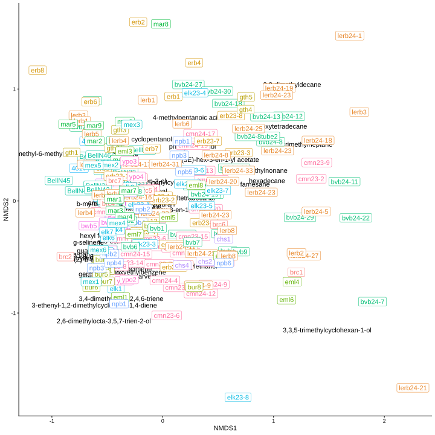
nmds.plot + geom_point(aes(color=sqrt(rowSums(vol)), shape=sample_year), size=2) + scale_color_viridis_c("Sqrt total peak area", option="magma") 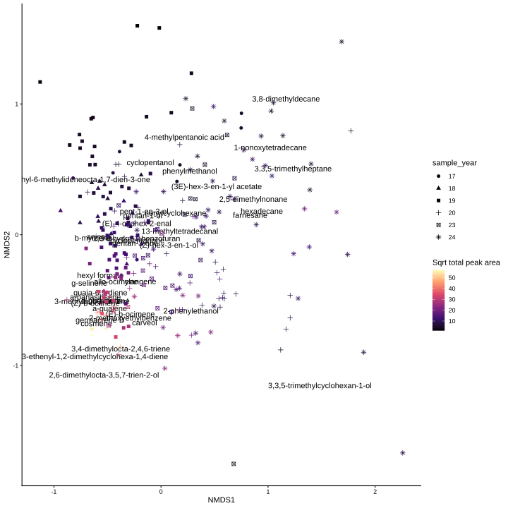
nmds.plot + geom_point(aes(color=sample_year), size=2)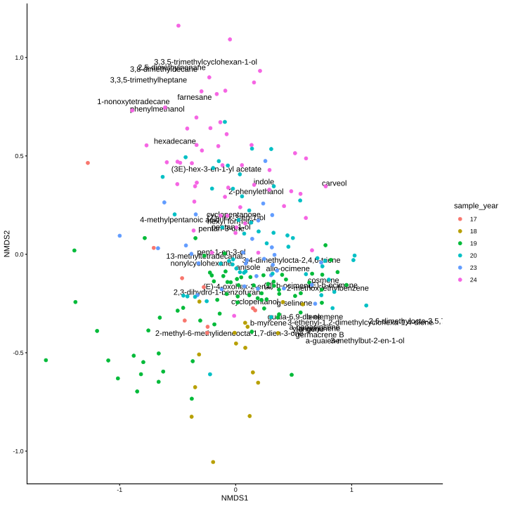
ggplot(meta, aes(x=paste0("20", sample_year, " run ", rundate), color=sample_year, y=Total)) +
geom_violin(scale="width", draw_quantiles=(1:3)/4) + geom_point() +
theme(axis.text.x = element_text(angle=90))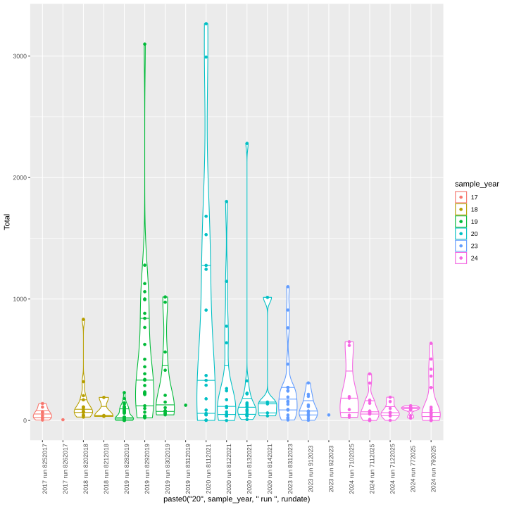
Only look at 2019 vs. 2020 here
twoyears <- meta$sample_year %in% c("19","20")
lup.cap <- capscale(sqrt(vol[twoyears,]) ~ sample_year, dist="bray", data=meta[twoyears,])
#View(lup.cap$CCA$v)
lup.cap.points <- fortify(lup.cap) %>% as_tibble()
lup.cap.samples <- lup.cap.points %>% filter(score=="sites") %>% bind_cols(meta[twoyears,])
lup.cap.chems <- lup.cap.points %>% filter(score=="species")
ggplot(lup.cap.samples, aes(x=CAP1, y=MDS1)) +
geom_point(aes(color=sample_year)) +
geom_text(data=lup.cap.chems, aes(label=label, alpha=chm$freq.floral)) + theme_classic()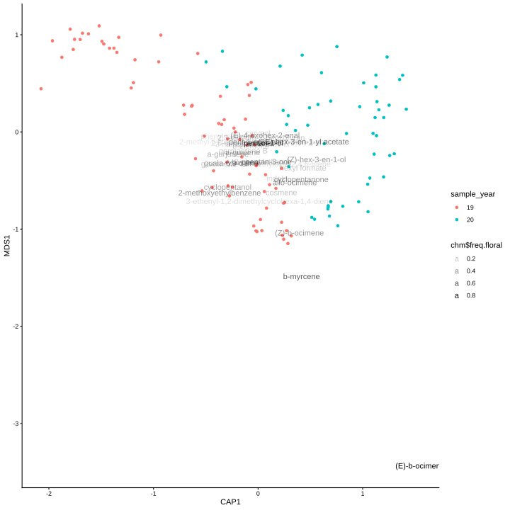
adonis2(sqrt(vol) ~ sample_year + population, data=meta)Permutation test for adonis under reduced model
Permutation: free
Number of permutations: 999
adonis2(formula = sqrt(vol) ~ sample_year + population, data = meta)
Df SumOfSqs R2 F Pr(>F)
Model 20 13.574 0.35615 5.8634 0.001 ***
Residual 212 24.539 0.64385
Total 232 38.113 1.00000
---
Signif. codes: 0 '***' 0.001 '**' 0.01 '*' 0.05 '.' 0.1 ' ' 1lup.cap <- capscale(sqrt(vol) ~ sample_year + population, dist="bray", data=meta)
lup.cap
Call: capscale(formula = sqrt(vol) ~ sample_year + population, data = meta,
distance = "bray")
Inertia Proportion Rank
Total 38.113
RealTotal 47.700 1.000
Constrained 14.357 0.301 20
Unconstrained 33.343 0.699 87
Imaginary -9.588
Inertia is squared Bray distance
-- NOTE:
Species scores projected from 'sqrt'
Species scores projected from 'vol'
Eigenvalues for constrained axes:
CAP1 CAP2 CAP3 CAP4 CAP5 CAP6 CAP7 CAP8 CAP9 CAP10 CAP11 CAP12 CAP13
4.879 3.898 1.383 1.135 1.027 0.521 0.294 0.262 0.188 0.167 0.139 0.099 0.090
CAP14 CAP15 CAP16 CAP17 CAP18 CAP19 CAP20
0.059 0.053 0.046 0.038 0.034 0.026 0.020
Eigenvalues for unconstrained axes:
MDS1 MDS2 MDS3 MDS4 MDS5 MDS6 MDS7 MDS8
7.578 2.814 2.624 2.102 1.689 1.345 1.250 0.961
(Showing 8 of 87 unconstrained eigenvalues)anova(lup.cap, by="margin")Permutation test for capscale under reduced model
Marginal effects of terms
Permutation: free
Number of permutations: 999
Model: capscale(formula = sqrt(vol) ~ sample_year + population, data = meta, distance = "bray")
Df SumOfSqs F Pr(>F)
sample_year 5 5.739 7.2982 0.001 ***
population 15 6.756 2.8635 0.001 ***
Residual 212 33.343
---
Signif. codes: 0 '***' 0.001 '**' 0.01 '*' 0.05 '.' 0.1 ' ' 1lup.cap.points <- fortify(lup.cap) %>% as_tibble()
lup.cap.samples <- lup.cap.points %>% filter(score=="sites") %>% bind_cols(meta)
lup.cap.chems <- lup.cap.points %>% filter(score=="species")
ggplot(lup.cap.samples, aes(x=CAP1, y=CAP2)) +
geom_text(data=lup.cap.chems, aes(label=label, alpha=chm$freq.floral)) +
geom_label(aes(label=paste0(pop, plant), color=sample_year)) + theme_classic()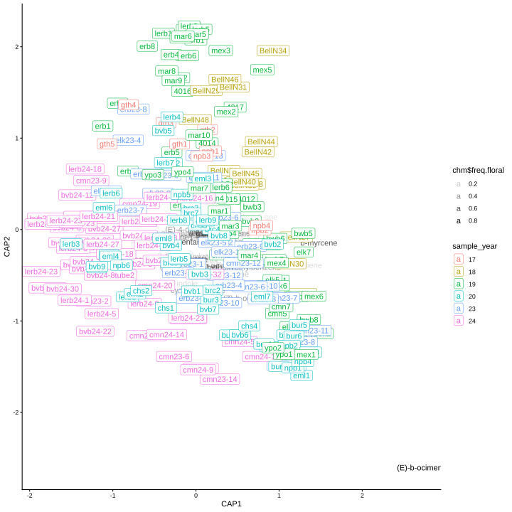
ggplot(lup.cap.samples, aes(x=CAP1, y=CAP2)) +
geom_point(aes(color=rowSum)) + scale_color_viridis_c("Total peak area") + theme_classic()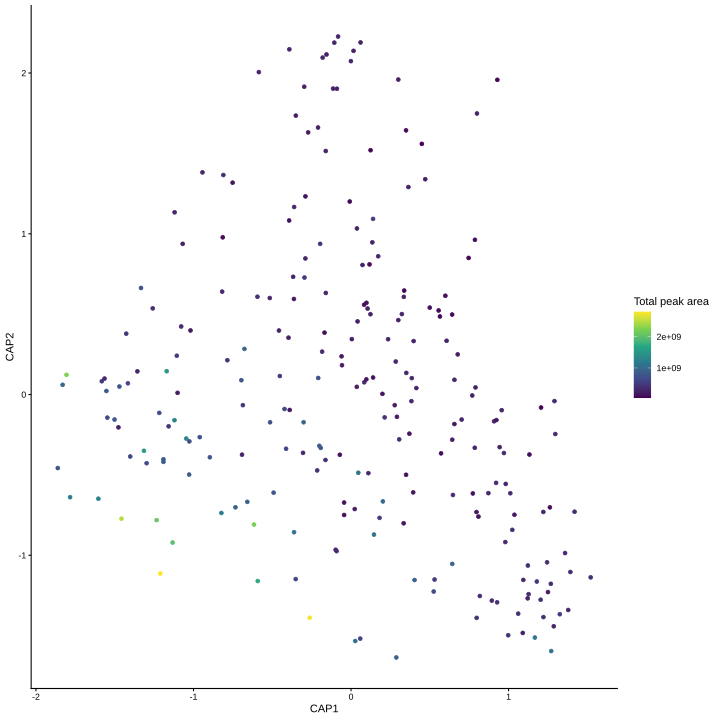
Compounds are in order of mean peak area, arranged in columns.
topamounts <- sort(colSums(vol), decreasing = T)
topchems <- head(names(topamounts), 18)
ggplot(enframe(topamounts) %>% mutate(name=fct_reorder(name, value)), aes(y=name, x=value)) + geom_col()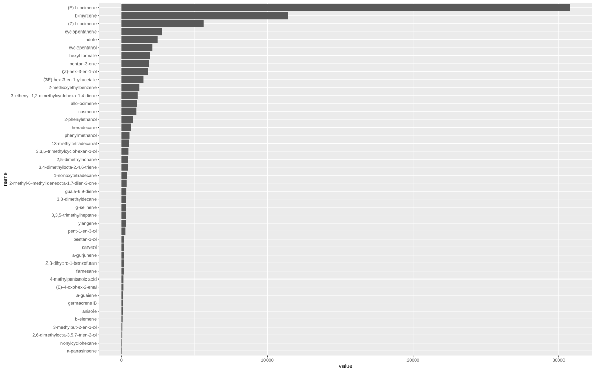
vol %>% select(topchems) %>% rownames_to_column("sample") %>%
pivot_longer(topchems) %>% mutate(name=fct_relevel(name, topchems)) %>%
left_join(meta) %>%
ggplot(aes(x=population, y=value, color=sample_year)) + facet_wrap(vars(name), ncol=3, scales="free_y", dir="v")+
scale_y_sqrt() + scale_x_discrete(guide=guide_axis(angle=90))+
geom_boxplot(position=position_dodge(width=0.9), outlier.shape = NA) +
geom_point(position=position_dodge(width=0.9)) +
labs(x="Population", y="Peak area", color="Year")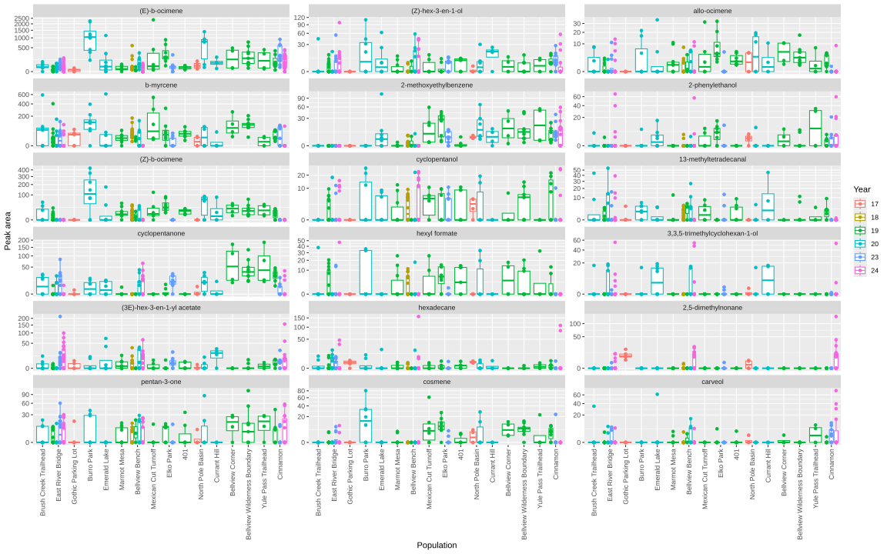
vol.sniff <- vol[!is.na(meta$scented),]
meta.sniff <- meta[!is.na(meta$scented),]
lup.cap <- capscale(sqrt(vol.sniff) ~ scented, dist="bray", data=meta.sniff)
lup.cap
Call: capscale(formula = sqrt(vol.sniff) ~ scented, data = meta.sniff,
distance = "bray")
Inertia Proportion Rank
Total 28.20574
RealTotal 34.08331 1.00000
Constrained 2.17913 0.06394 1
Unconstrained 31.90418 0.93606 73
Imaginary -5.87758
Inertia is squared Bray distance
-- NOTE:
Species scores projected from 'sqrt'
Species scores projected from 'vol.sniff'
Eigenvalues for constrained axes:
CAP1
2.1791
Eigenvalues for unconstrained axes:
MDS1 MDS2 MDS3 MDS4 MDS5 MDS6 MDS7 MDS8
8.108 3.873 2.907 1.924 1.640 1.393 1.001 0.907
(Showing 8 of 73 unconstrained eigenvalues)anova(lup.cap, by="margin")Permutation test for capscale under reduced model
Marginal effects of terms
Permutation: free
Number of permutations: 999
Model: capscale(formula = sqrt(vol.sniff) ~ scented, data = meta.sniff, distance = "bray")
Df SumOfSqs F Pr(>F)
scented 1 2.179 12.089 0.001 ***
Residual 177 31.904
---
Signif. codes: 0 '***' 0.001 '**' 0.01 '*' 0.05 '.' 0.1 ' ' 1lup.cap.points <- fortify(lup.cap) %>% as_tibble()
lup.cap.samples <- lup.cap.points %>% filter(score=="sites") %>% bind_cols(meta.sniff)
lup.cap.chems <- lup.cap.points %>% filter(score=="species")
ggplot(lup.cap.samples, aes(x=CAP1, y=MDS1)) +
geom_text(aes(label=paste0(pop, plant), color=scented)) +
geom_text(data=lup.cap.chems, aes(label=label, alpha=chm$freq.floral)) + theme_classic()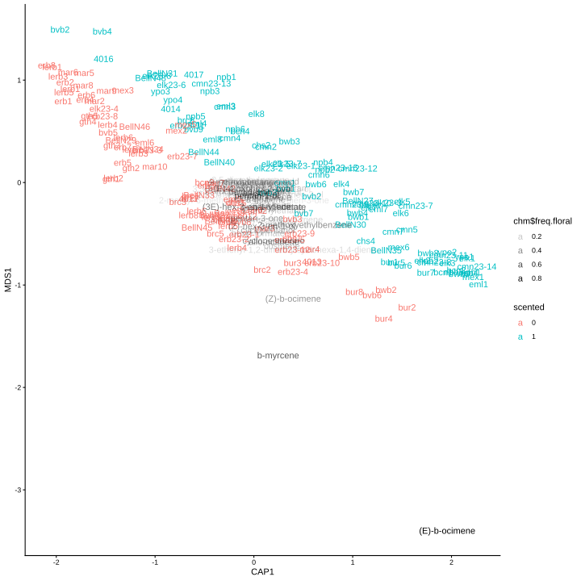
ggplot(lup.cap.samples, aes(x=CAP1, y=MDS1)) +
geom_point(aes(color=rowSum, shape=scented), size=3) +
geom_text(data=lup.cap.chems, aes(label=label, alpha=chm$freq.floral))+ scale_color_viridis_c("Total peak area") + theme_classic()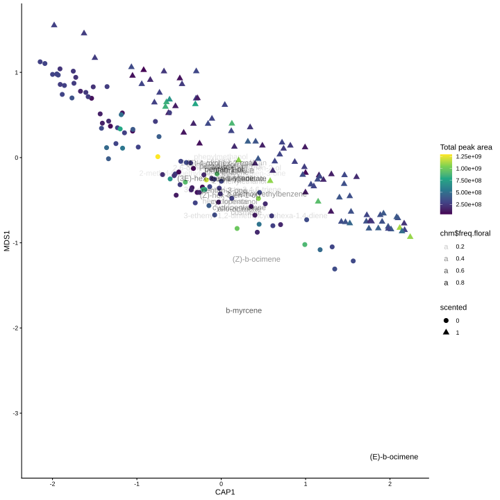
ggplot(cbind(meta.sniff, vol.sniff), aes(x=pop, y=`(E)-b-ocimene`, color=scented)) +
geom_boxplot(position=position_dodge(width=0.9))+
geom_point(position=position_dodge(width=0.9), size=3) + scale_y_sqrt() + theme_minimal()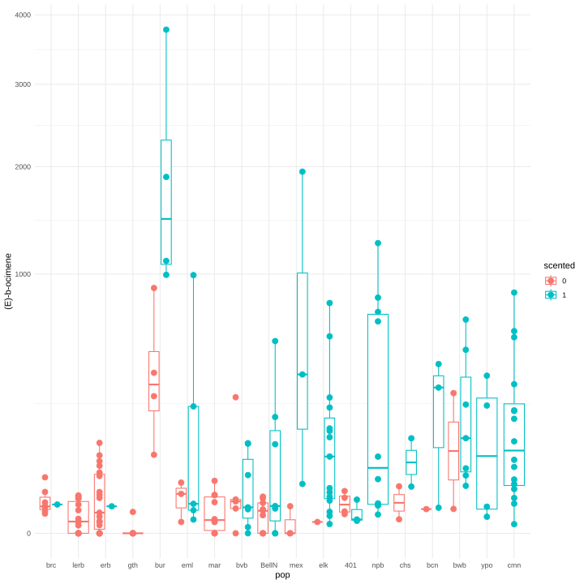
ggplot(cbind(meta.sniff, vol.sniff), aes(x=pop, y=rowSums(vol.sniff), color=scented)) + geom_boxplot(position=position_dodge(width=0.9))+
geom_point(position=position_dodge(width=0.9), size=3)+ scale_y_sqrt("Total emissions (ng/hr)") + theme_minimal() 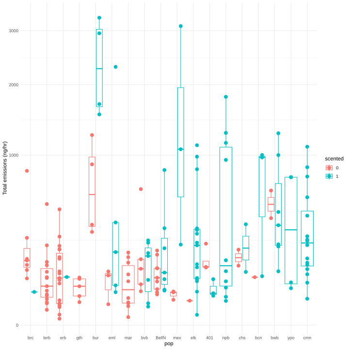
lup.cap <- capscale(sqrt(vol) ~ elev, dist="bray", data=meta)
lup.cap
Call: capscale(formula = sqrt(vol) ~ elev, data = meta, distance = "bray")
Inertia Proportion Rank
Total 38.11275
RealTotal 47.70037 1.00000
Constrained 2.27864 0.04777 1
Unconstrained 45.42173 0.95223 87
Imaginary -9.58762
Inertia is squared Bray distance
-- NOTE:
Species scores projected from 'sqrt'
Species scores projected from 'vol'
Eigenvalues for constrained axes:
CAP1
2.2786
Eigenvalues for unconstrained axes:
MDS1 MDS2 MDS3 MDS4 MDS5 MDS6 MDS7 MDS8
10.034 6.414 3.565 2.537 2.112 1.759 1.537 1.388
(Showing 8 of 87 unconstrained eigenvalues)anova(lup.cap, by="margin")Permutation test for capscale under reduced model
Marginal effects of terms
Permutation: free
Number of permutations: 999
Model: capscale(formula = sqrt(vol) ~ elev, data = meta, distance = "bray")
Df SumOfSqs F Pr(>F)
elev 1 2.279 11.588 0.001 ***
Residual 231 45.422
---
Signif. codes: 0 '***' 0.001 '**' 0.01 '*' 0.05 '.' 0.1 ' ' 1lup.cap.points <- fortify(lup.cap) %>% as_tibble()
lup.cap.samples <- lup.cap.points %>% filter(score=="sites") %>% bind_cols(meta)
lup.cap.chems <- lup.cap.points %>% filter(score=="species")
ggplot(lup.cap.samples, aes(x=CAP1, y=MDS1)) +
geom_text(aes(label=paste0(pop, plant), color=elev)) + scale_color_viridis_c()+
geom_text(data=lup.cap.chems, aes(label=label, alpha=chm$freq.floral)) + theme_classic()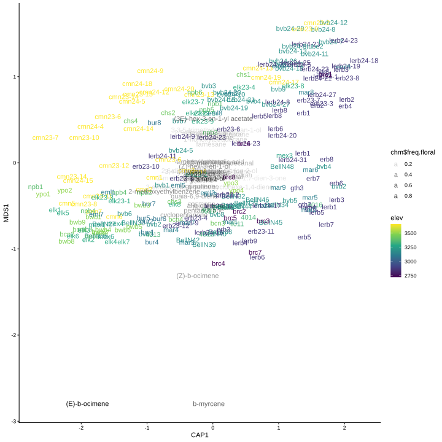
ggplot(cbind(meta, vol), aes(x=elev, y=`(E)-b-ocimene`, color=sample_year, shape=scented, linetype=scented)) + geom_point() +
stat_summary(fun=mean, geom="line")+ stat_summary(fun=mean, geom="point", size=4)+
scale_shape_manual(values=c(4,15), na.value=1) + scale_linetype_manual(values=c(2,1), na.value=1) + scale_y_sqrt() + theme_minimal()+
geom_text(data=distinct(pops,population,.keep_all = T), aes(x=elev,y=0,label=pop), nudge_y = -2, angle=90, inherit.aes = F)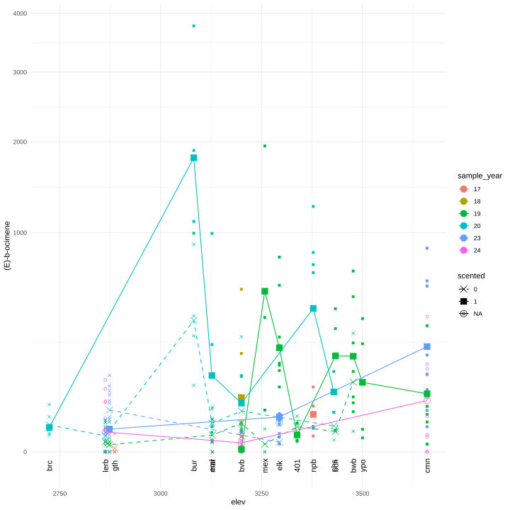
ggplot(cbind(meta, vol), aes(x=elev, y=Total, color=sample_year, shape=scented, linetype=scented)) + geom_point() +
stat_summary(fun=mean, geom="line")+ stat_summary(fun=mean, geom="point", size=4)+
scale_shape_manual(values=c(4,15), na.value=1) + scale_linetype_manual(values=c(2,1), na.value=1) + scale_y_sqrt("Total emissions (ng/hr)") + theme_minimal()+
geom_text(data=distinct(pops,population,.keep_all = T), aes(x=elev,y=0,label=pop), nudge_y = -2, angle=90, inherit.aes = F)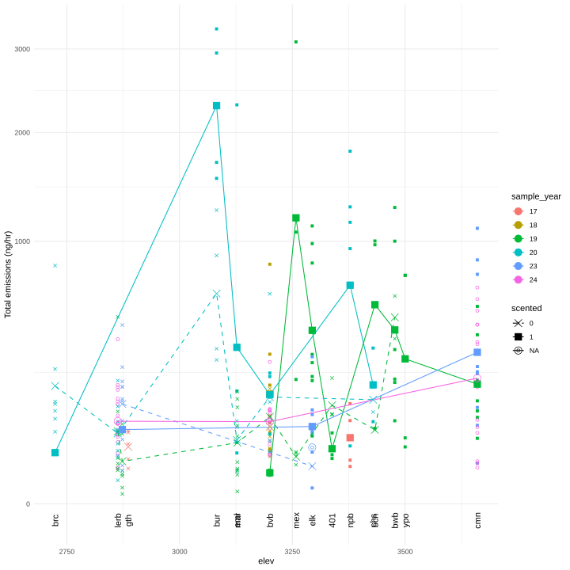